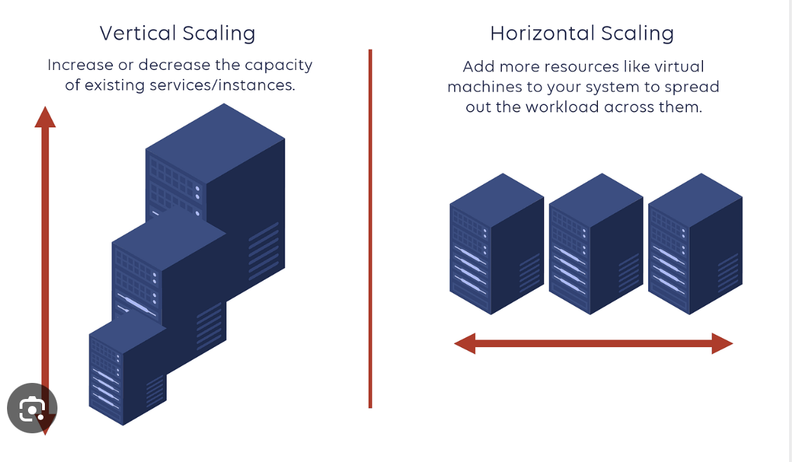
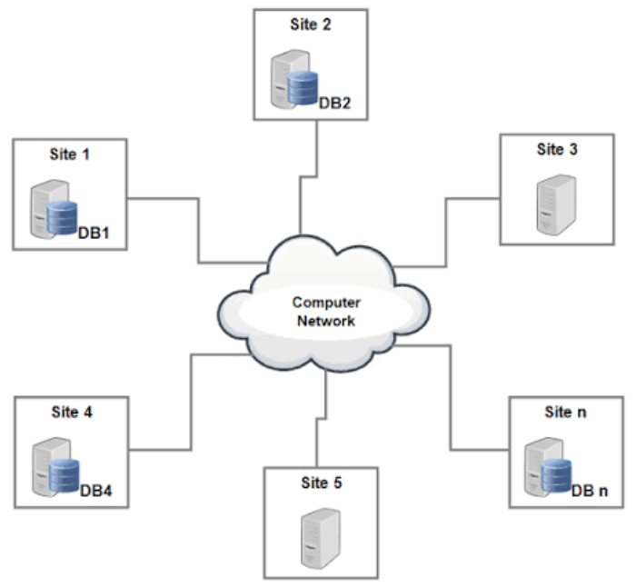
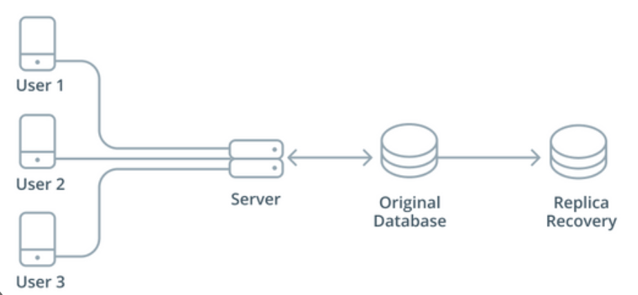
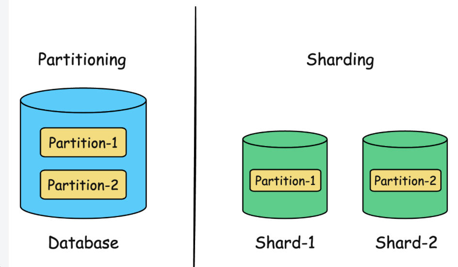
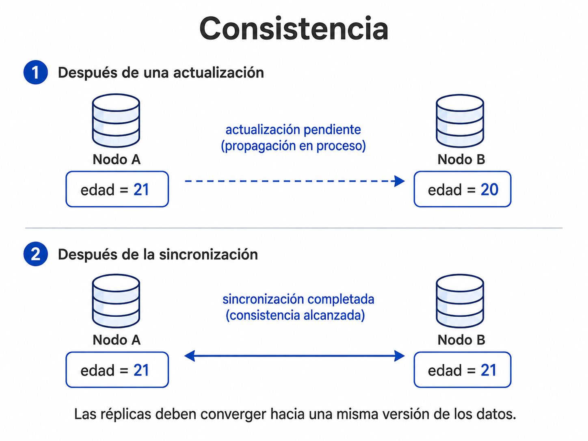
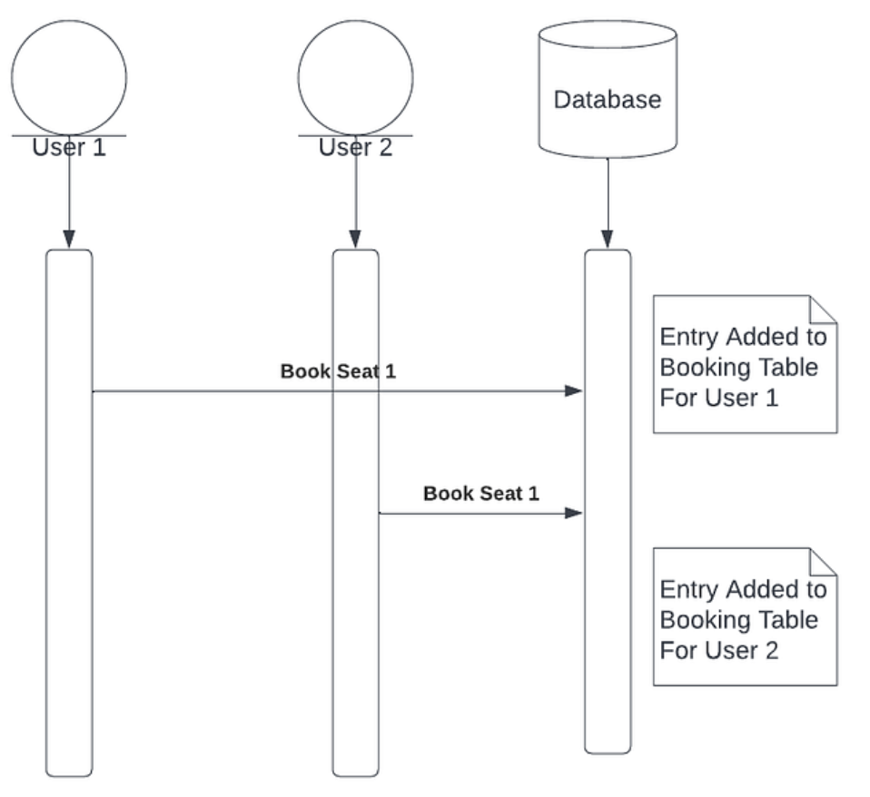
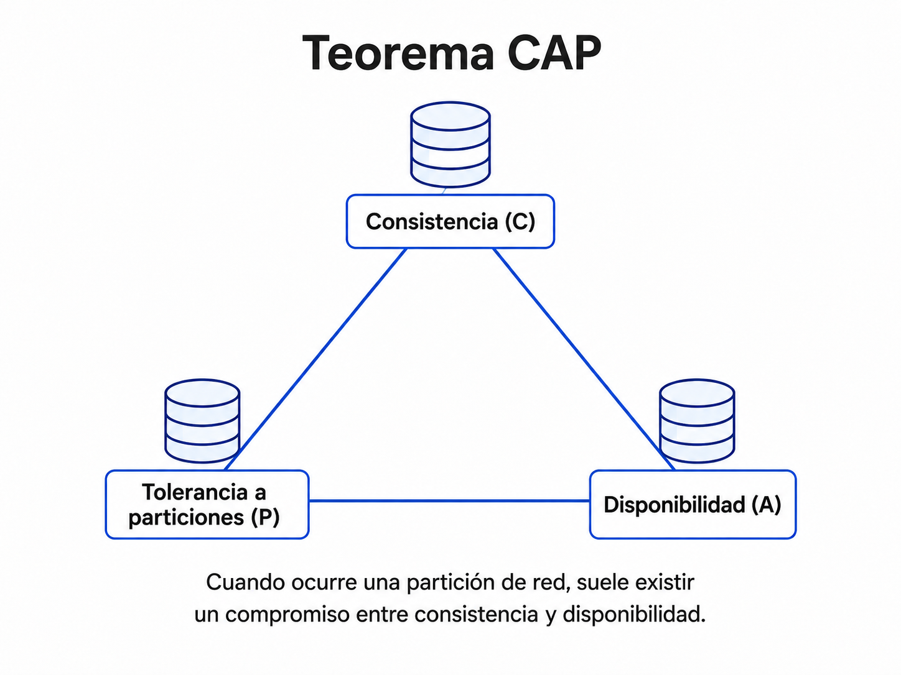
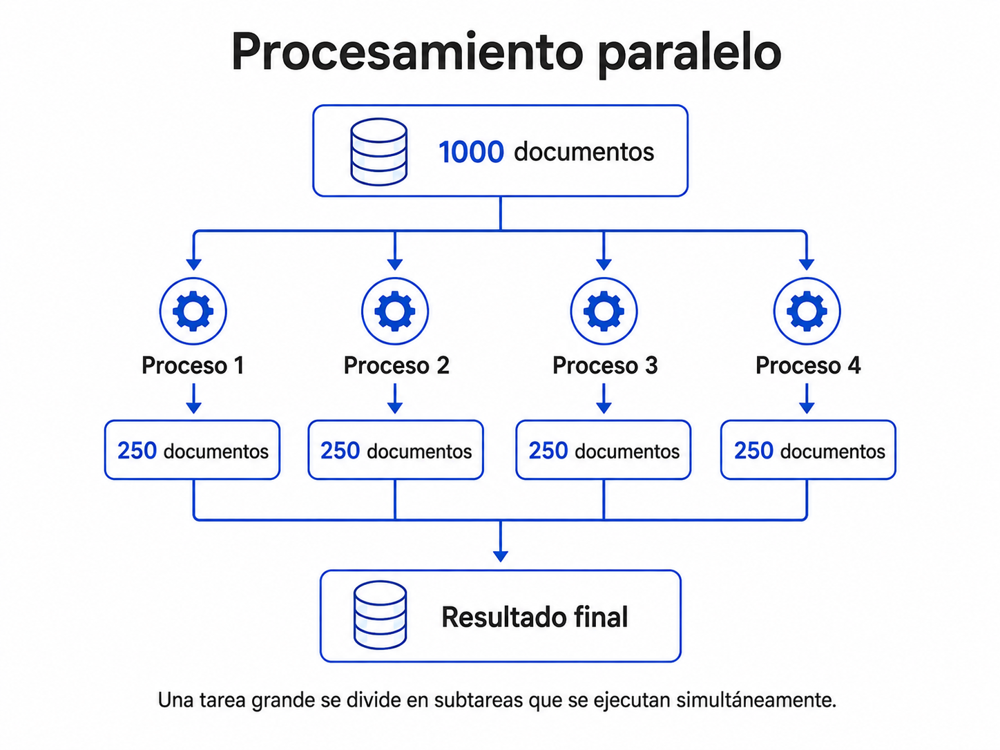

Escalabilidad y bases de datos distribuidas
1 Introducción
En el tema anterior revisamos distintas formas de representar la información y analizamos por qué existen diferentes modelos de bases de datos.
Ahora cambiaremos ligeramente la pregunta.
Ya no nos concentraremos únicamente en:
¿Cómo representamos los datos?
También necesitamos preguntarnos:
¿Qué ocurre cuando una aplicación crece y debe atender cada vez más usuarios, consultas y datos?
A medida que un sistema aumenta su tamaño pueden aparecer nuevos retos:
- más usuarios conectados al mismo tiempo;
- mayor volumen de información;
- más consultas por segundo;
- más operaciones simultáneas;
- mayor necesidad de almacenamiento;
- mayores requerimientos de procesamiento.
Estos problemas están relacionados con conceptos como escalabilidad, sistemas distribuidos, replicación, particionamiento, consistencia y concurrencia (Kleppmann 2017).
Una aplicación puede funcionar perfectamente con pocos usuarios y comenzar a presentar problemas cuando aumenta la demanda.
El diseño que funciona para:
100 usuariosno necesariamente será suficiente para:
10,000,000 de usuarios2 Punto de partida
Imaginemos una plataforma que almacena:
perfiles de usuarios
publicaciones
imágenes
comentarios
registros de actividadAl principio, un solo servidor puede ser suficiente.
Por ejemplo:
Usuarios
│
↓
Servidor
│
↓
Base de datosSin embargo, conforme aumenta el número de usuarios también aumenta la cantidad de información y de solicitudes que debe procesar el sistema.
Podríamos pasar de:
100 usuarios
500 publicaciones
20 usuarios conectadosa:
100,000 usuarios
5,000,000 publicaciones
10,000 usuarios conectadosy posteriormente a:
10,000,000 usuarios
500,000,000 publicaciones
100,000 usuarios conectadosAhora el sistema debe procesar muchas más operaciones:
iniciar sesión
consultar perfiles
publicar contenido
registrar comentarios
buscar usuarios
actualizar información
mostrar recomendacionesLa pregunta entonces es:
¿Cómo aumentamos la capacidad del sistema para que continúe funcionando adecuadamente?
Esto nos lleva al concepto de escalabilidad.
3 ¿Qué es la escalabilidad?
La escalabilidad es la capacidad de un sistema para mantener un funcionamiento adecuado cuando aumenta la demanda (Kleppmann 2017).
La carga puede crecer debido a:
- mayor cantidad de usuarios;
- crecimiento del volumen de datos;
- aumento del número de consultas;
- mayor cantidad de operaciones simultáneas;
- necesidad de procesar información con mayor rapidez.
Existen dos estrategias generales para aumentar la capacidad de un sistema:
Escalabilidad vertical
Escalabilidad horizontal4 Escalabilidad vertical y horizontal
4.1 Escalabilidad vertical
La escalabilidad vertical, también conocida como scale up, consiste en aumentar los recursos de una misma máquina.
Por ejemplo:
Servidor inicial
├── 4 núcleos
├── 8 GB RAM
└── 500 GB de almacenamientopodría sustituirse o ampliarse a:
Servidor más potente
├── 32 núcleos
├── 128 GB RAM
└── 8 TB de almacenamientoLa idea principal es:
misma máquina
+
más recursosSe puede aumentar:
RAM
CPU
almacenamiento
capacidad de procesamiento4.2 Ejemplo
Supongamos que el servidor de una universidad comienza a responder lentamente durante el periodo de inscripciones.
Una primera solución podría ser pasar de:
8 GB RAMa:
32 GB RAMo utilizar un procesador más potente.
En este caso estamos aumentando la capacidad del mismo servidor.
4.3 Escalabilidad horizontal
La escalabilidad horizontal, también conocida como scale out, consiste en agregar más servidores o nodos al sistema.
En lugar de utilizar únicamente:
Servidor 1podemos trabajar con:
Servidor 1
Servidor 2
Servidor 3
Servidor 4y repartir el trabajo entre ellos.
Por ejemplo:
Usuarios
│
↓
Distribución de carga
│
├──── Servidor 1
├──── Servidor 2
└──── Servidor 3Esta estrategia está estrechamente relacionada con los sistemas distribuidos (Kleppmann 2017).

La diferencia puede resumirse de forma sencilla:
Vertical → hacer más poderosa una máquina
Horizontal → agregar más máquinas5 Comparación de escalabilidad
| Problema | Escalabilidad vertical | Escalabilidad horizontal |
|---|---|---|
| Poca memoria | Agregar RAM | Agregar nodos |
| Muchas consultas | Mejorar CPU | Distribuir consultas |
| Muchos datos | Aumentar disco | Distribuir información |
| Alta demanda | Mejorar servidor | Repartir carga |
La escalabilidad vertical puede ser más sencilla inicialmente, pero existe un límite físico y económico sobre cuánto puede crecer una sola máquina.
La escalabilidad horizontal permite incorporar nuevos nodos conforme aumenta la demanda, aunque también introduce nuevos retos de coordinación.
Imaginemos un restaurante.
Escalabilidad vertical
un cocinero
↓
un cocinero con mejores herramientasEscalabilidad horizontal
un cocinero
↓
varios cocineros trabajando juntosAgregar personas aumenta la capacidad, pero también requiere coordinación.
6 Bases de datos distribuidas
La escalabilidad horizontal nos conduce al concepto de sistema distribuido.
Una base de datos distribuida almacena y gestiona información utilizando varios servidores o nodos conectados mediante una red.
Los datos pueden encontrarse:
- distribuidos entre diferentes servidores;
- replicados en varios nodos;
- almacenados en diferentes ubicaciones físicas;
- administrados como parte de un mismo sistema.

Desde la perspectiva del usuario, estos servidores pueden comportarse como un solo sistema.
Usuario
│
↓
Sistema distribuido
│
├── Nodo A
├── Nodo B
└── Nodo C7 ¿Qué es un nodo?
En un sistema distribuido, cada servidor participante puede considerarse un nodo.
Un nodo puede:
- almacenar una parte de la información;
- mantener una copia de determinados datos;
- recibir consultas;
- realizar operaciones;
- comunicarse con otros nodos.
Por ejemplo:
Nodo A ───── Nodo B
│ │
└──── Nodo C ┘Los nodos trabajan coordinadamente para formar un único sistema lógico.
Que una base sea distribuida no significa simplemente que tengamos varias computadoras.
Los nodos necesitan mecanismos para:
comunicarse
coordinarse
intercambiar información
manejar fallos
mantener los datos8 Replicación
Una estrategia utilizada en sistemas distribuidos es la replicación.
La replicación consiste en mantener copias de la misma información en diferentes nodos (Kleppmann 2017).
Por ejemplo:
Dato original
│
├── Nodo A
├── Nodo B
└── Nodo CLos tres nodos pueden almacenar una copia del mismo dato.

8.1 ¿Por qué replicar?
La replicación puede ayudar a:
- aumentar la disponibilidad;
- mantener copias de respaldo;
- mejorar la tolerancia a fallos;
- distribuir algunas operaciones de lectura.
8.2 Ejemplo
Supongamos que tenemos:
Nodo A → información de usuarios
Nodo B → copia de información de usuarios
Nodo C → copia de información de usuariosSi el Nodo A presenta una falla, todavía existen otras copias.
Nodo A ❌
Nodo B ✓
Nodo C ✓El sistema podría continuar funcionando utilizando alguno de los nodos disponibles.
8.3 Ventajas y retos
| Ventajas | Retos |
|---|---|
| Mayor disponibilidad | Sincronización |
| Tolerancia a fallos | Mayor uso de almacenamiento |
| Copias de los datos | Retrasos entre réplicas |
| Distribución de lecturas | Posibles inconsistencias temporales |
La idea fundamental es:
mismos datos
↓
varios nodosNo debemos confundirla con particionamiento.
9 Particionamiento de datos
Otra estrategia consiste en dividir la información.
El particionamiento permite separar un conjunto grande de datos en partes más pequeñas.
Por ejemplo:
| Nodo | Información almacenada |
|---|---|
| Nodo 1 | Usuarios 1–1000 |
| Nodo 2 | Usuarios 1001–2000 |
| Nodo 3 | Usuarios 2001–3000 |
Cada nodo almacena solamente una parte del conjunto total.

Podemos visualizarlo así:
Todos los usuarios
│
├── Usuarios 1–1000
│ ↓
│ Nodo 1
│
├── Usuarios 1001–2000
│ ↓
│ Nodo 2
│
└── Usuarios 2001–3000
↓
Nodo 310 Particionamiento y sharding
Cuando las diferentes particiones de los datos se distribuyen entre distintos nodos, se utiliza comúnmente el término sharding (Kleppmann 2017).
Por ejemplo:
Base completa
│
├── Fragmento A → Nodo A
├── Fragmento B → Nodo B
└── Fragmento C → Nodo CCada fragmento suele denominarse shard.
El objetivo es evitar que un solo servidor tenga que almacenar y procesar todo el conjunto de datos.
11 Replicación vs. particionamiento
Aunque ambos conceptos aparecen frecuentemente juntos, resuelven problemas diferentes.
| Replicación | Particionamiento |
|---|---|
| Se crean copias | Se dividen los datos |
| Los mismos datos pueden aparecer en varios nodos | Cada nodo puede almacenar una parte |
| Ayuda a disponibilidad | Ayuda a distribuir grandes volúmenes |
| Puede facilitar recuperación ante fallos | Permite repartir almacenamiento y carga |
Una forma sencilla de recordarlos es:
Replicación
A → A → A
Particionamiento
ABC → A | B | CUn sistema real puede tener:
Partición A
├── copia 1
└── copia 2
Partición B
├── copia 1
└── copia 2Es decir, los datos pueden estar particionados y replicados al mismo tiempo.
12 Consistencia
La replicación introduce una nueva pregunta:
¿Qué ocurre cuando modificamos un dato que tiene varias copias?
Supongamos que dos nodos contienen:
Nodo A: edad = 20
Nodo B: edad = 20El usuario actualiza su edad:
20 → 21La modificación llega primero al Nodo A:
Nodo A: edad = 21
Nodo B: edad = 20Durante un breve periodo, los dos nodos contienen valores distintos.

Después de la sincronización:
Nodo A: edad = 21
Nodo B: edad = 21La consistencia está relacionada con qué tan coherente es la información observada por los distintos participantes del sistema (Kleppmann 2017).
Si un usuario consulta:
Nodo A → edad = 21y otro consulta:
Nodo B → edad = 20¿qué comportamiento debería tener el sistema?
La respuesta depende del modelo de consistencia utilizado y de las necesidades de la aplicación.
13 ¿Toda inconsistencia temporal es igual de grave?
No necesariamente.
Imaginemos dos escenarios.
13.2 Una operación financiera
En cambio, si hablamos del saldo de una cuenta:
Nodo A → $10,000
Nodo B → $8,000una diferencia temporal puede tener consecuencias mucho más importantes.
Por eso los requisitos de consistencia dependen del problema.
14 Concurrencia
La concurrencia ocurre cuando múltiples usuarios o procesos intentan acceder o modificar información al mismo tiempo.
Por ejemplo:
Producto disponible: 1Dos usuarios intentan comprarlo simultáneamente:
Usuario A ── Comprar ──┐
├── mismo producto
Usuario B ── Comprar ──┘
Otro ejemplo puede ser la reservación de un asiento.
Asiento 15A
│
├── Usuario A → reservar
│
└── Usuario B → reservarSi el sistema no coordina correctamente las operaciones podría ocurrir una doble reserva.
15 Problemas de concurrencia
Cuando la concurrencia no se controla adecuadamente pueden aparecer:
- actualizaciones perdidas;
- datos inconsistentes;
- operaciones duplicadas;
- lecturas de información desactualizada;
- conflictos entre operaciones simultáneas.
15.1 Ejemplo de actualización perdida
Supongamos:
Saldo inicial = 100Dos procesos leen ese mismo valor:
Proceso A lee 100
Proceso B lee 100Después:
Proceso A suma 20 → 120
Proceso B resta 10 → 90Si ambos escriben sin coordinación, una de las modificaciones podría sobrescribir a la otra.
Consistencia
se relaciona con mantener una visión coherente de la información.
Concurrencia
se relaciona con múltiples operaciones que ocurren al mismo tiempo.
Son conceptos diferentes, aunque pueden estar estrechamente relacionados.
16 Teorema CAP
Uno de los conceptos más conocidos en sistemas distribuidos es el teorema CAP.
CAP describe tres propiedades:
C → Consistency
A → Availability
P → Partition Tolerance
16.1 C — Consistency
Los nodos ofrecen una visión coherente de la información.
De manera simplificada, después de una actualización esperamos que las consultas observen el valor correcto de acuerdo con las garantías del sistema.
16.2 A — Availability
Cada solicitud realizada a un nodo operativo recibe una respuesta.
El sistema intenta continuar atendiendo las solicitudes.
16.3 P — Partition Tolerance
El sistema puede continuar operando a pesar de que exista una interrupción de comunicación entre algunos nodos.
17 ¿Qué es una partición de red?
Supongamos que tenemos:
Nodo A ←────────→ Nodo BNormalmente los nodos intercambian información.
Ahora ocurre una falla:
Nodo A X Nodo BAmbos nodos pueden continuar encendidos, pero ya no pueden comunicarse correctamente.
Eso es una partición de red.
18 El compromiso del teorema CAP
Cuando existe una partición de red, el sistema debe decidir cómo responder.
18.1 Priorizar consistencia
Puede evitar responder si no puede garantizar que los datos sean coherentes.
No estoy seguro de tener
el valor actualizado
↓
no respondo todavía18.2 Priorizar disponibilidad
Puede continuar respondiendo aunque temporalmente algunos nodos tengan información diferente.
Nodo A → valor nuevo
Nodo B → valor anteriorEl servicio continúa disponible, aunque puede existir una diferencia temporal.
Una simplificación frecuente consiste en decir:
CAP = elegir dos de tresEsto puede ser engañoso.
El compromiso importante aparece cuando existe una partición de red. En ese escenario, un sistema distribuido debe decidir cómo equilibrar consistencia y disponibilidad (Kleppmann 2017).
19 Ejemplo conceptual de CAP
19.1 Sistema bancario
En una operación financiera puede resultar muy importante evitar mostrar información incorrecta.
Por ejemplo:
Saldo correcto: $5,000puede ser preferible no completar temporalmente una operación antes que utilizar un saldo incorrecto.
En determinados escenarios podría priorizarse la consistencia.
20 Procesamiento paralelo
El procesamiento paralelo consiste en dividir una tarea en varias partes que pueden ejecutarse simultáneamente.
Puede utilizarse para:
- procesar grandes volúmenes de información;
- reducir tiempos de ejecución;
- distribuir tareas entre varios procesadores;
- aprovechar varios nodos;
- ejecutar diferentes operaciones al mismo tiempo.

21 Ejemplo de procesamiento paralelo
Supongamos que necesitamos procesar:
1000 documentosEn lugar de procesarlos uno por uno con un solo proceso:
Proceso 1
↓
1000 documentospodemos dividir el trabajo:
1000 documentos
│
├── Proceso 1 → 250
├── Proceso 2 → 250
├── Proceso 3 → 250
└── Proceso 4 → 250Los cuatro procesos pueden ejecutarse simultáneamente.
Después:
Resultado 1
Resultado 2
Resultado 3
Resultado 4
│
↓
Resultado finalSi el problema puede dividirse adecuadamente, esta estrategia puede reducir el tiempo total de procesamiento.
Supongamos que necesitamos analizar:
1,000,000 de comentariosPodríamos dividirlos en grupos y procesarlos de manera paralela.
Comentarios
│
├── lote 1 → proceso 1
├── lote 2 → proceso 2
├── lote 3 → proceso 3
└── lote 4 → proceso 4Posteriormente se combinan los resultados.
22 Procesamiento paralelo y sistemas distribuidos
Los conceptos están relacionados, pero no son exactamente lo mismo.
El procesamiento paralelo busca ejecutar varias tareas simultáneamente.
Un sistema distribuido utiliza varias máquinas o nodos que se comunican mediante una red.
Podemos tener procesamiento paralelo:
en una sola máquinautilizando varios núcleos, o:
entre varias máquinasdentro de un sistema distribuido.
23 Relación entre los conceptos
Los conceptos estudiados durante este tema están conectados.
Crecimiento de datos y usuarios
↓
Escalabilidad
↓
Bases de datos distribuidas
↓
Replicación y particionamiento
↓
Consistencia, concurrencia y CAP
↓
Procesamiento y operación
sobre varios recursosEl crecimiento de un sistema puede hacer necesario escalar.
La escalabilidad horizontal puede llevar a utilizar varios nodos.
Al utilizar varios nodos necesitamos decidir cómo almacenar los datos.
Podemos:
replicarlos
particionarlos
o combinar ambas estrategiasA partir de ahí aparecen nuevos retos de:
consistencia
concurrencia
disponibilidad
comunicación entre nodos
tolerancia a fallos24 Ejemplo integrado
Imaginemos una plataforma de comercio electrónico.
Inicialmente:
Usuarios
↓
Servidor
↓
Base de datosConforme aumenta la demanda podemos agregar servidores:
Usuarios
↓
varios servidoresLa base puede dividirse:
Productos A–M → Nodo 1
Productos N–Z → Nodo 2y además replicarse:
Nodo 1 → Réplica 1
Nodo 2 → Réplica 2Ahora debemos considerar:
¿qué ocurre si un nodo falla?
¿cómo se actualizan las copias?
¿qué sucede si dos usuarios compran el último producto?
¿qué ocurre si dos nodos dejan de comunicarse?Es decir, el crecimiento de una aplicación transforma un problema aparentemente sencillo de almacenamiento en un problema de arquitectura distribuida.
25 Actividad de autoevaluación
Relaciona cada situación con el concepto correspondiente.
| Situación | Concepto |
|---|---|
| Agregar más RAM al servidor | ___ |
| Agregar tres servidores nuevos | ___ |
| Guardar la misma información en dos nodos | ___ |
| Dividir usuarios entre diferentes servidores | ___ |
| Dos personas intentan reservar el mismo asiento | ___ |
| Dos réplicas muestran temporalmente valores distintos | ___ |
| Los nodos pierden comunicación entre sí | ___ |
| Dividir 1000 documentos entre cuatro procesos | ___ |
Agregar RAM
→ escalabilidad vertical
Agregar servidores
→ escalabilidad horizontal
Copiar información
→ replicación
Dividir usuarios
→ particionamiento
Reservar el mismo asiento
→ concurrencia
Valores distintos entre réplicas
→ consistencia
Pérdida de comunicación
→ partición de red
Dividir documentos
→ procesamiento paralelo26 Ideas clave del tema
Podemos escalar:
verticalmenteaumentando recursos de una máquina, o:
horizontalmenteagregando más nodos.
Los nodos pueden participar en:
almacenamiento
consultas
procesamiento
replicación
particionamientoReplicar → copiar datos
Particionar → dividir datosAmbas estrategias pueden combinarse.
Cuando varios nodos participan en el sistema aparecen preguntas relacionadas con:
consistencia
sincronización
concurrencia
disponibilidad
fallos de comunicaciónAnte una interrupción de comunicación entre nodos, el sistema debe decidir cómo equilibrar:
consistencia
disponibilidadmanteniendo la tolerancia a la partición necesaria para continuar operando como sistema distribuido (Kleppmann 2017).
Una tarea puede dividirse en partes que se ejecutan simultáneamente para aprovechar mejor los recursos disponibles.
27 En la siguiente sesión
Después de comprender los fundamentos de escalabilidad y sistemas distribuidos, podremos relacionar estos conceptos con gestores NoSQL concretos.
MongoDB nos permitirá comenzar a trabajar con:
bases de datos
colecciones
documentos
campos
arreglos
objetos anidados
consultasy observar de manera práctica cómo funciona una base de datos orientada a documentos.